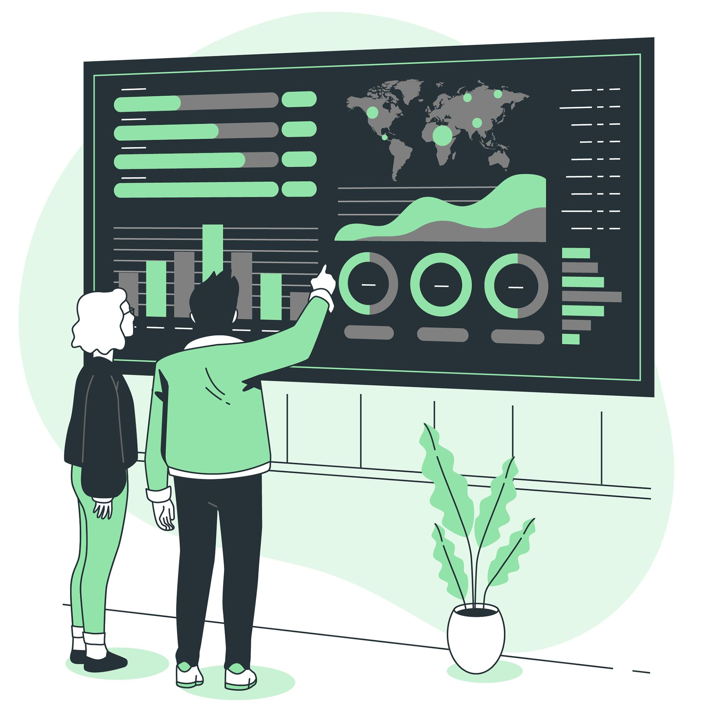

REQUIREMENTS
The requirements of our project as listed below are acquired from semi-structured interviews with pseudo-users to
help us determine the direction of our project development. For the interview, we prepare a set of open-ended questions
to be asked to our users as this type of questions can help us better understand the needs of their needs. All our interviews
are held in-person without the use of any forms but we record their answers and we discuss our findings in the following
group meeting to evaluate the importances of having certain features on our dashboard, as needed by the users. This can
ensure a user-centric final product is produced. The main requirements we gathered can be categorised as follows:

TIME MANAGEMENT
Saves a lot of clinicians' valuable time by having an easily-navigable interface for self-evaluation

SUPERVISION
Allows Head-of-Departments to supervise clinicians for continued improvement in care quality provided

USABILITY
Multiple dashboard feature which allows all departments within the hospital to utilise this interface